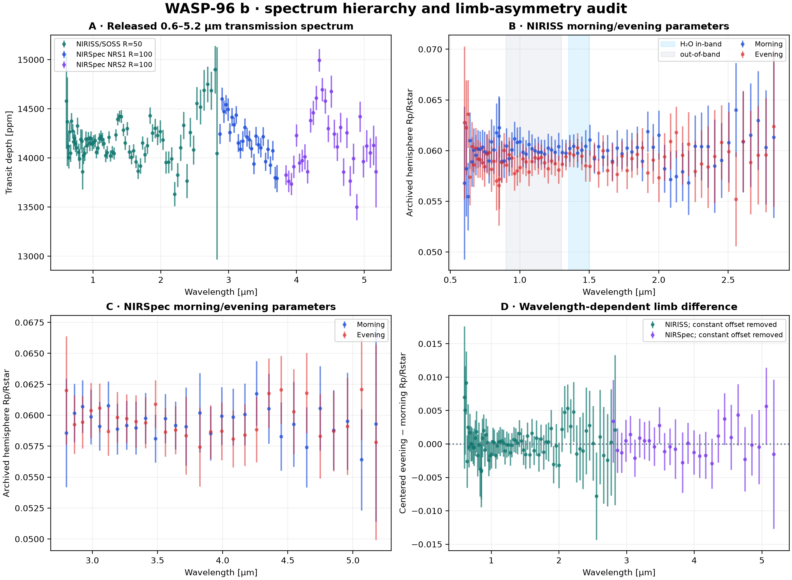

Data source notes
SHA-256, LF-normalised text
316f34226aca05a524ec94828e621b2648520020cebcda69e3a15f68bee7d55aBrowse 12 versioned evidence files. Table previews simply display stored rows. Consult the project report for the source, processing steps, and inference assumptions.

316f34226aca05a524ec94828e621b2648520020cebcda69e3a15f68bee7d55a| # Target: WASP-96b |
|---|
| # Instrument: NIRISS/SOSS |
| # Pipeline: exoTEDRF |
| # Light Curve Fitting: exoUPRF |
| # 1D Extraction: box |
f3c50dcdf0437c781e0c12a1335a6a3ac9d82aa57698963b501cdbf2672a4993| # Target: WASP-96b |
|---|
| # Instrument: NIRSpec/G395H |
| # Pipeline: exoTEDRF |
| # Light Curve Fitting: exoUPRF |
| # 1D Extraction: box |
eb5355a1f1d7b84aa06a02765edb40141780a15632a8e7ad7e7a290999697632| # Target: WASP-96b |
|---|
| # Instrument: NIRISS/SOSS |
| # Pipeline: exoTEDRF |
| # Light Curve Fitting: exoUPRF |
| # 1D Extraction: box |
4055bf6624b804e42656a10c2a8eda16c9a47031acc0b6299b162231521588a1| # Target: WASP-96b |
|---|
| # Instrument: NIRISS/SOSS |
| # Pipeline: exoTEDRF |
| # Light Curve Fitting: exoUPRF |
| # 1D Extraction: box |
3920f5fffea63556bf5688bdcb38910299626ba30dbd52eda2c092d9343fb06d| # Target: WASP-96b |
|---|
| # Instrument: NIRISS/SOSS |
| # Pipeline: exoTEDRF |
| # Light Curve Fitting: exoUPRF |
| # 1D Extraction: box |
c954010766b8508e8842f5d2b619f559a57449ac4ebd7236c226a0edcc5205a1| # Target: WASP-96b |
|---|
| # Instrument: NIRISS/SOSS |
| # Pipeline: exoTEDRF |
| # Light Curve Fitting: exoUPRF |
| # 1D Extraction: box |
01157336a04fe5a951b91ba81f513d9b4d316dfdcbde4215fd4a9d04f766b09d371966f10a0db401eec243c9a856797ebdb9c8b5701257c13a8361cce863a919| quantity | value | unit |
|---|---|---|
| source_product_count | 12 | count |
| niriss_diagonal_mean_difference | -0.001009132297452752 | Rp/Rstar |
| niriss_diagonal_mean_ratio | -3.4016868074940954 | sigma-like ratio |
| nirspec_diagonal_mean_ratio | 0.03687065276376372 | sigma-like ratio |
6b906a378c6e0d621848bf7fca1465791d43d56579db7a2c2de1bcdcfbf2b84b| diagonal_uncertainty_rprs | evening_minus_morning_rprs | instrument | wavelength_micron |
|---|---|---|---|
| 0.01064841083340931 | 0.005964866989261054 | NIRISS | 0.6002308870598335 |
| 0.0066165811828748705 | 0.004051687711976816 | NIRISS | 0.613425891161254 |
| 0.0047275113003761565 | 0.008136173163062976 | NIRISS | 0.6269109638629249 |
| 0.003922842801068694 | -0.003617470786046434 | NIRISS | 0.6406924818049899 |
78a12917593931996121557af5719a4019731e464a2fdf974cc459a6fcd15d34| file | kind | n_bins | n_valid_bins | wave_max | wave_min | weighted_mean_dppm |
|---|---|---|---|---|---|---|
| WASP-96b_NIRISS_SOSS_transmission_spectrum_FixLD_FixT0_Asymmetric_R50.csv | asymmetric | 77 | 2.8287491530803264 | 0.6002308870598335 | ||
| WASP-96b_NIRISS_SOSS_transmission_spectrum_PriorLD_Slope_2pix.csv | symmetric | 1302 | 1302 | 2.8282498717308044 | 0.6008427441120148 | 14106.971872546894 |
| WASP-96b_NIRISS_SOSS_transmission_spectrum_PriorLD_Slope_R100.csv | symmetric | 156 | 156 | 2.827327818108201 | 0.6032463893219454 | 14146.632280469881 |
| WASP-96b_NIRISS_SOSS_transmission_spectrum_PriorLD_Slope_R300.csv | symmetric | 466 | 466 | 2.8273152583921677 | 0.6012322110604365 | 14128.51877963859 |
bb9bc5bcadead5801931c13796c6c0775718a454f4aaf38de2e11a6ec0ecd91b727af20f4dcf8a3844139668e0075e2c0b1db230d14b80ed46a7b7b22fde5d66SHA-256 values verify the stored files. They do not independently validate the scientific analysis. Rebuild this page with python scripts/evidence_catalog.py followed by python scripts/render_evidence_page.py.